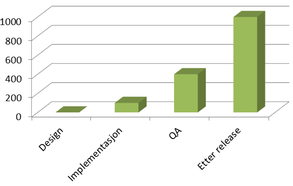
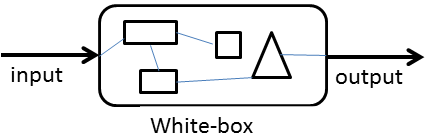
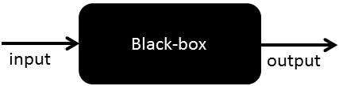
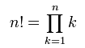
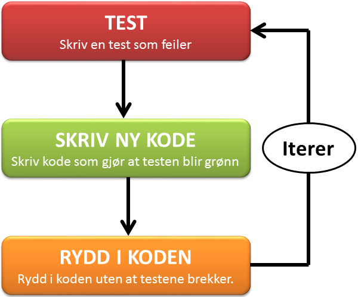

.center.middle # Test-drevet Webutvikling _.tt[ivar.conradi.osthus@iteraconsulting.no],_<br /> _.tt[kris-mikael.krister@iteraconsulting.no]_ --- # Agenda 1. Testing intro - Hvorfor tester vi? - Ulike test-typer - Testing i flere nivå 2. Play framework - Introduksjon til rammeverket - Praktisk eksempel (følger med på minnestick) - Rask presentasjon av Selenium og Selenese - Vise ulike testtyper - Installasjon og oppsett av første prosjekt 3. Test-driven development - Introduksjon til TDD - Kodeeksempel 4. Workshop - Utfordringer med test-drevet webutvikling - Introdusere oppgaven - Teste kontrollere - Teste modeller - Teste perisistering - Teste validering - Teste viewet --- .center.middle # Testing intro --- # Hvorfor tester vi? - **Øke kodekvaliten** - Finner feil/bugs tidligere - Mindre debugging - Sikre at koden *løser problemet* vårt - Sikre at koden *ikke* gjør noe annet enn den skal - Beskytte koden mot **bieffekter** ved fremtidige endringer - Tryggere å refaktorere - **Fungerer som dokumentasjon** - Hvordan skal koden benyttes? - Hvordan instansiere opp et objekt? - Hva er grenseverdiene? --- .center # Det tar tid å fikse feil i koden  --- .center # Vi ønsker å unngå feil i produksjon --- ###White-box testing  <br /><br /> ###Black-box testing  --- # God testpraksis - Små tester som tester som verifiserer konkrete funksjoner - Automatiserte tester - Raske tester - Testene skal kunne kjøres i vilkårlig rekkefølge - Testene kjøres ved **innsjekk** av ny kode - Typisk av en *continous integration* server <div class="moody box"> ###Dersom koden er vanskelig å teste er det et tegn på dårlig design... </div> --- .center # Testing i flere nivå <img src="images/tests.png" /> --- # Enhetstester.red.bold[*] .footnote[.red.bold[*] Tilhører kategorien white-box testing] <div class="box happy"> ###Validerer at *isolerte enheter* i applikasjonen fungerer slik de skal. </div> - Tester små biter av koden - Tester *betinget* funksjonalitet - *Isolerte* tester. - Involverer typisk bare en klasse - Faker avhengiger via "*mocks*" - F.eks: fake en database basert på API ### Eksempler i WEB-app - Benyttes til å validere domenemodeller --- #Enhetstester: eksempel <div class="code"> public class FoobarTest{ @Before public void setUp() { // Kode som kjøres før hver test } @Test public void shouldSumCorrectly() { assertEquals(2, 1+2); } } </div> --- # Funksjonelle tester.red.bold[*] .footnote[.red.bold[*] Form for black-box testing] <div class="box happy"> ###Fokuserer på å teste en spesifikk funksjon i applikasjonen. </div> - Verifiserer at grensesnitt følger kontrakten. - Kan fortelle oss at "noe i koden" brakk - Tester koden på tilsvarende måte som den blir konsumert. - Innvolverer typisk flere klasser ### Eksempler i WEB-app - Teste at kontrollerene håndterer forespørsler korrekt. - Verifisere at en HTML-form finnes på siden. - Ble brukeren redirigert til riktig side? - Er brukeren autentisert korrekt? --- # Akseptansetester.red.bold[*] .footnote[.red.bold[*] Black-box testing] <div class="box happy"> ### Sikre at systemet tilfredstiller kravene som er satt til løsningen. </div> ### Hvorfor? - Tester systemetet fra *brukerens* perspektiv - Høy-nivå tester som verifiserer hele brukerhistorier - Sikre at systemet løser *kravene* - Fokuserer *ikke* på hvordan et krav er løst ### Eksempler i en WEB-applikasjon - Verifisere at en HTML-form finnes på. - Verifisere at det er mulig å legge til en kommentar. - Verifisere at brukeren havner på forsiden etter å lagt til en kommentar. --- .center.middle # Play framework --- - Webrammeverk for java - Lært av Rails - Lettvekt - God testintegrasjon <br /> <br /> <div class="happy box"> .label[Fordeler] - Lært fra andres feil - Inkluderer hele webstacken - Automatisk rekompilering - Konvensjon over konfigurasjon </div> <div class="angry box"> .label[Ulemper] - Begrenset dokumentasjon - Begrenset mengde bibliotek tilgjengelig </div> <br /> .center[.big[Så hvorfor har vi valgt Play i dag?]] --- # Plays arkitektur .center <img style="zoom: 0.87" src="images/play_architecture.png" /> --- # Demo <div class="happy box"> .label[Hva skal til for å starte en webapp i Play?] 1. Installer Java 1. Last ned og unzip .tt[play.zip] 1. Fra kommandolinje: .tt[play new minApplikasjon] 1. .tt[play run minApplikasjon] 1. Time to try! </div> .html ├── app │ ├── controllers │ │ └── Application.java │ ├── models │ └── views │ ├── Application │ │ └── index.html │ ├── errors │ │ ├── 404.html │ │ └── 500.html │ └── main.html ├── ... └── test ├── Application.test.html ├── ApplicationTest.java ├── BasicTest.java └── data.yml --- # Oppsett av play <div class="moody box"> .label[Win] - Installer .tt[java] hvis du ikke har JDK fra før (ligger på usb) - Kopier mappa .tt[play] til .tt[c:\dev\play] (fra usb) - Startmeny » Run/Kjør » Skriv .tt[cmd] (og trykk enter) - Skriv .tt[cd c:\dev\play] (og trykk enter) - Skriv .tt[play] (og trykk enter), får du ASCII-art tilbake så er alt OK </div> <div class="happy box"> .label[Linux/Mac] - Installer .tt[java] hvis du ikke har JDK fra før (installasjonsbeskrivelse ligger på usb) - Kopier .tt[play] til hjemmekatalog (fra usb) - Åpne en terminal, .tt[cd play] - Kjør .tt[./play], får du ASCII-art tilbake så er alt OK </div> <div class="angry box"> .label.problem[Problemer?] - Java må være installert, Play leter etter java på path eller gjennom variablen .tt[JAVA_HOME] - Python-issues » team opp med en annen - Andre problemer? » Hør med en av oss </div> --- .center.middle # Test-drevet utvikling --- # Eksempel <div class="happy box"> .label[TDD by example] Vi skal bruke TDD til å implementere metoden .tt[factorial(int n)] i Java. Denne metoden skal regne ut og returnere fakultetet til tallet n som sendes inn som argument til metoden. *Eksempler:*<br /> .tt[2! = 2 x 1 = 2] <br /> .tt[5! = 5 x 4 x 3x 2 x 1 = 120] </div> ###Definisjon av fakultet:  --- .center # TDD: en itera*tiv* prosess  --- # TDD: fordeler - **Koden får god testdeking** - Gir tiltro til at koden er korrekt - Koden blir garantert testbar - God dokumentasjon - Beskytter kode ved fremtidige endringer - Kan også teste uten TDD? Ikke disiplinert nok? Mangel på tid.., fredag ettermiddag.., vi har jo *manuelt* testet at koden virker!!! - **DD gir oss hurtig tilbakemelding** - Mindre bruk av debugger - Gir mulighet til å oppdage feil tidligere - **Reduserer mengden av "kjekt å ha kode"** - **Tvinger utvikler til å fokusere på mindre biter av problemet** - Må fokusere på grensesnitt før kode implementeres - Tar små steg i retning av løsningen - Modularisert og fleksibel kode som enkelt lar seg utvide. - Mindre komplekst enn å designe en hel løsning upfront - **Gjør det trygt og enkelt å refaktorere kode** --- .center # TDD: ungå waste --- # TDD: svakheter - Må skrive mer kode totalt - Mange tester og høy testdekning gir ikke høyere **kodekvalitet** - Kan bare garantere et *minimum* av kvalitet. - Det er kvaliteten på testene (og koden) som er avgjørende - Er en krevende prosess - Vanskelig å skrive gode, små og konkrete tester - Tar lengre tid til vi får funksjonalitet? - Rammeverk og bibliotek legger føringer for løsningens design - Vi må ofte tilpasse hvordan vi planlegger designet vårt basert på rammeverk vi bruker. - Kan på kort sikt gjøre deg mindre produktiv - bruker tid på å løse alle småfeil tidlig. --- .center.middle <div class="happy box"> # Hovedpoenget med TDD er ikke å skrive testene først, men derimot at vi <u>iterere</u> over <u>designet</u> kontinuerlig og stadig gjør små <u>forbedringer</u>. </div> --- .center.middle # Workshop --- # Utfordringer ved test-drevet webutvikling <div class="moody box"> <br /> * Lite kontroll på klientsiden * Mange avhengigheter nødvendig » vanskelig å finne generelle test-løsninger * Integrasjon med database, nettverk, webtjenester </div> --- # Introduksjon til oppgave <div class="happy box"> .label[Hva vi skal] 1. "Todo"-applikasjon som - Gir mulighet for å legge til oppgaver - Lister opp oppgavene som er lagt til 1. Funksjonaliteten skal drives frem ved å skrive tester først (TDD) </div> <div class="angry box"> .label[Hva vi _ikke_ skal] - Lære detaljer i Play - Bry oss om utseende/styling - Prøve å implementere mest mulig funksjonalitet </div> --- # Opprett applikasjonen <div class="moody box"> 1. Start » Kjør/Run » .tt[cmd] 1. .tt[cd c:\dev\play] 1. .tt[play new todo] 1. .tt[play eclipsify todo] 1. I eclipse: File/Import/General/Existing project for å importere prosjektet 1. .tt[play test todo] 1. Åpne .tt[http://localhost:9000] i en nettleser </div> --- # Iterasjon 1 <div class="moody box"> .label[Hva skal implementeres?] - Klassen .tt[models.Todo] skal kunne opprettes med feltene .tt["beskrivelse"] (description) og .tt["prioritet"] (priority). Dette skal lagres i instansen som instansvariabler. </div> <div class="moody box"> .label[Tips] 1. Lag en unit-test som lager en .tt["Todo"] og verifiserer at properties blir satt 1. Se at testen feiler 1. Opprett klassen .tt[models.Todo] og implementer nødvendig funksjonalitet i klassens konstruktør </div> --- # LF Iterasjon 1 // Test: public class TodoTest extends UnitTest { @Test public void testThatWeCanCreateTodo() { Todo todo = new Todo("beskrivelse", 1); assertEquals("beskrivelse", todo.description); assertEquals(1, todo.priority); } } <div></div> // Implementasjon: package models; public class Todo { public String description; public int priority; public Todo(String description, int priority) { this.description = description; this.priority = priority; } } --- # Iterasjon 2 <div class="moody box"> .label[Hva skal implementeres?] Instanser av modellen - inkludert alle datafelter - skal kunne lagres til database. </div> <div class="moody box"> .label[Tips] - Opprett unit-test .tt[test/models/TodoTest.java] som lager en .tt[Todo], kaller .tt[save()] på instansen og ser om den har blitt lagret i databasen. - Fiks feilende test ved å extende modellen med "Model", og annoter klassen med .tt[@Entity] - Husk at tester skal kjøres i isolasjon, bruk JUnits .tt[@Before] og .tt[Fixtures.deleteDatabase()] </div> @Test // JUnit public void shouldPersistTodo() { // opprett en todo og deleger lagring til Hibernate ved å kalle save() // hent alle todos med Todo.findAll() // bruk assertEquals() til å verifisere at antall todos er som forventet } // Modell: @Entity // Hibernate-annotering public class Todo extends Model { // Model er en hjelpeklasse fra Play // ... } --- # LF Iterasjon 2 .java @Before public void setup() { Fixtures.deleteDatabase() } @Test public void testThatWeCanStoreTodo() { Todo todo = new Todo("beskrivelse", 1); todo.save(); List<Todo> todos = Todo.findAll(); assertEquals(1, todos.size()); Todo firstTodo = todos.get(0); assertEquals("beskrivelse", firstTodo.description); assertEquals(1, firstTodo.priority); } <div></div> @Entity public class Todo extends Model { public String description; public int priority; public Todo(String description, int priority) { this.description = description; this.priority = priority; } --- # Iterasjon 3 <div class="moody box"> .label[Hva skal implementeres?] Vi skal implementere kontrolleren som tilbyr GET på følgende URL: .tt[/todo/add]. </div> <div class="moody box"> .label[Tips] - Opprett unit-test .tt[test/controller/TodoFunctionalTest.java] som gjør en GET-forespørsel på .tt[/todo/add] og verifiserer at responsen er 200 ok. - Sjekk at testen feiler. - Fiks feilende test ved å opprette en *Todo kontroller* som har en "add" action. </div> <div class="moody box"> .label[Om kontrollere] - Skal ligge i *controllers* pakken - Må arve fra *Controller* - Alle actions skal være **static** i play. </div> --- # Iterasjon 4 <div class="moody box"> .label[Hva skal implementeres?] Vi skal implementere en action i todo-kontrolleren som tilbyr POST til følgende URL: .tt[/todo/create] med to parameter inn: *description* og *priority*. Metoden skal også opprette en ny *todo* basert på input og lagre den. </div> <div class="moody box"> .label[Tips] - Legg til et nytt test-case i .tt[test/controller/TodoFunctionalTest.java] som gjør en POST til .tt[/todo/create]. - Sjekk at testen feiler. - Fiks feilende test. - Husk at tester skal kjøres i isolasjon, bruk JUnits .tt[@Before] og .tt[Fixtures.deleteDatabase()] - Du kan verifisere at en TODO ble opprettet ved å hente ut alle todo's via TODO.findAll(). </div> --- # Iterasjon 5 <div class="moody box"> .label[Hva skal implementeres?] Vi ønsker at det skal finnes en index-action på todo-kontrolleren slik at løsningen vår svarer på "todo/index". </div> <div class="moody box"> .label[Tips] * Dette er en funksjonell test </div> --- # Iterasjon 6 <div class="moody box"> .label[Hva skal implementeres?] Vi skal viderutvikle create-metoden slik at den redirecter oss til .tt[/todo/index] etter at vi har opprettet en ny *todo*. </div> <div class="moody box"> .label[Tips] - ved å kalle en annen metode i kontrolleren vil Play utføre en redirect for oss. </div> --- # Iterasjon 7 <div class="moody box"> .label[Hva skal implementeres?] * Når jeg åpner .tt[/todo/add] skal tittel på siden være "Legg til en todo" </div> <div class="moody box"> .label[Tips] - Selenium egner seg til testing av HTML-respons, opprett derfor .tt[test/Todo.test.html] - Ta en titt på Selenese sin .tt[assertTitle()] - Kjør testen via .tt[http://localhost:9000/@tests] - Fiks feilende test (opprett et view i .tt[app/views/todo/add.html]) </div> // fil: test/Application.test.html #{selenium} // Open the home page, and check that no error occured open('/') assertNotTitle('Application error') #{/selenium} --- # LF Iterasjon 7 // Test #{selenium} // Open page, and check that no error occured open('/todo/add') assertTitle('Add Todo') assertNotTitle('Application error') #{/selenium} <div></div> .html // Implementasjon: #{extends 'main.html' /} #{set title:'Add Todo' /} --- # Iterasjon 8 <div class="moody box"> .label[Hva skal implementeres?] - Når jeg åpner .tt[/todo/add] skal jeg bli presentert med en form som har input-elementer for .tt["beskrivelse"] og .tt["prioritet"] - Formen skal poste til .tt[/todo/create] og ha en submit-knapp </div> <div class="moody box"> .label[Tips] - Selenium egner seg til testing av HTML-respons, så fortsett på .tt[test/Todo.test.html] - .tt[assertElementPresent('css=cssSelector')] kan brukes til å kreve at HTML-elementer er tilstede - Kjør testen via .tt[http://localhost:9000/@tests] - Fiks feilende test (oppdater view) </div> .html <form action="/my/action" method="POST" id="myForm" class="aForm"></form> Et form-element som over kan hentes med følende css-selectors: .html "form", "form.aForm", "#myForm", "form#myForm", "form[method=POST]" --- # LF Iterasjon 8 // Test #{selenium} // Check that content contains a form open('/todo/add') verifyElementPresent('css=form') verifyElementPresent('css=input#description') verifyElementPresent('css=input#priority') verifyElementPresent('css=input[type=submit]') #{/selenium} <div></div> .html // Implementasjon: <h1>Legg til en ny TODO:</h1> <form action="/todo/create" method="POST"> <label for="description">Beskrivelse</label> <input id="description" name="description" /> <br /> <label for="priority">Prioritet</label> <input id="priority" name="priority" type="number" /> <br /> <input type="submit" /> </form> --- # Iterasjon 9 <div class="moody box"> .label[Hva skal implementeres?] * Når man åpner .tt[/todo/index] skal man få listen over eksisterende todos </div> <div class="moody box"> .label[Tips] * Selenium passer til denne testen * Fixtures kan brukes til å mocke test-data * Man trenger en index-metode i Todo-kontrolleren som leverer alle Todos til viewet </div> --- # LF Iterasjon 9 // Test #{fixture delete:'all', load:'data.yml' /} #{selenium} open('/todo/index') verifyText('css=li:nth-child(1)', 'Viktig todo*') verifyText('css=li:nth-child(2)', 'Lala en kulere beskrivelse*') verifyText('css=li:nth-child(6)', 'Lala en kul beskrivels*') #{/selenium} <div></div> .html // Implementasjon: #{extends 'main.html' /} #{set title:'List todo' /} <h1>Liste over planlagte oppgaver:</h1> <ul> #{list items:todos, as:'todo'} <li class="ui-state-default">${todo.description} - ${todo.priority}</li> #{/list} </ul> --- # Iterasjon 10 <div class="moody box"> .label[Hva skal implementeres?] Vi ønsker å kreve at todo-er som opprettes har en beskrivelse. </div> <div class="moody box"> .label[Tips] * En funksjonell test passer her. * Benytt @Required anotering i models * Man trenger en index-metode i Todo-kontrolleren som leverer alle Todos til viewet * Har en lagre-funksjon i Play som validerer og lagrer: .tt[todo.validateAndSave()] * Vi må også verifisere at requesten blir redirgert tilbake til .tt[/todo/add] </div> --- # Iterasjon 11 <div class="moody box"> .label[Hva skal implementeres?] * Når det er feilmeldinger i skjemaet skal disse vises til brukeren i en liste </div> <div class="moody box"> .label[Tips] * .tt[http://www.playframework.org/documentation/1.2.4/tags#errors] </div> --- # LF Iterasjon 11 // Test #{selenium} // Verify that error's are showed. open('/todo/add') type('css=input#description', '') type('css=input#priority', '') clickAndWait('css=input[type=submit]') verifyTextPresent('Error') #{/selenium} <div></div> .html // Implementasjon: #{extends 'main.html' /} #{set title:'Add Todo' /} #{ifErrors} <h1>Error…</h1> #{errors} <li>${error}</li> #{/errors} #{/ifErrors} <h1>Legg til en ny TODO:</h1> <!-- resten av "add.html" her --> --- # Ressurser 1. Test Driven Development: By Example - Kent Beck 2. Introduction to Test Driven Development - http://www.agiledata.org/essays/tdd.html 3. The Three Laws of TDD - Uncle Bob - http://butunclebob.com/ArticleS.UncleBob.TheThreeRulesOfTdd 4. http://en.wikipedia.org/wiki/Test-driven_development --- .center.middle # Takk for oss! (Slideshow created using [remark](http://github.com/gnab/remark).)